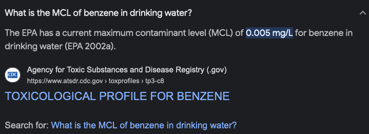

15.2 Non-Aqueous Phase Liquids#
Course Website
Readings#
Videos#
Chapter 11
Non-aqueous phase liquids (NAPLs) are organic compounds that exist in a liquid state but do not readily dissolve in water. They can include various substances such as petroleum hydrocarbons, solvents, oils, and other industrial chemicals. When released into the environment, NAPLs can contaminate groundwater, posing a significant risk to its quality.
Due to their immiscibility in water, NAPLs can form separate phases in the subsurface, creating pools or layers above the water table. These substances can migrate through soil and porous rock, impacting groundwater quality by dissolving slowly or releasing toxins as they break down over time. The presence of NAPLs in groundwater can lead to long-term contamination, making remediation challenging and costly.
Characteristics of NAPLs, such as their density, viscosity, and the degree of solubility in water, affect their behavior in the subsurface. This influences the extent of their spread and the potential for groundwater contamination. Remediation strategies often involve techniques to recover, contain, or degrade these substances to mitigate their impact on groundwater quality.
Light NAPL (LNAPL)#
Light non-aqueous phase liquids (LNAPLs) are a subset of non-aqueous phase liquids (NAPLs) that have a lower density than water. Unlike dense NAPLs (DNAPLs), which sink below the water table, LNAPLs tend to float on the water table or in the vadose zone above the water table.
LNAPLs commonly include substances like gasoline, diesel, and certain oils. Because they are less dense than water, when released into the environment, they tend to migrate horizontally and pool on top of the water table or accumulate in the pore spaces of the soil above the groundwater.
A set of experiments reported by Schwille, F; Pankow, J F (1988) “Dense chlorinated solvents in porous and fractured media - Model experiments” have guided understanding of how NAPLs behave in groundwater systems.
A sketch and interpretation from Schwille and Pankow (1988) follows:

The behavior of LNAPLs is influenced by factors such as their density, viscosity, and interfacial tension with water. When LNAPLs are released into the subsurface, they can spread laterally, potentially contaminating the surrounding soil and groundwater as they slowly dissolve or release components into the water. Remediation of LNAPL contamination typically involves techniques to recover or treat the liquid, prevent further spreading, and protect groundwater resources from ongoing contamination. These techniques might include pump-and-treat systems, soil vapor extraction, natural attenuation, or other specialized remediation methods.
Dense NAPL (DNAPL)#
Dense non-aqueous phase liquids (DNAPLs) are a specific category of non-aqueous phase liquids (NAPLs) that have a higher density than water. These substances tend to sink through the subsurface and can penetrate porous materials such as soil and rock, reaching depths below the water table.
Some sketches and interpretation from Schwille, F; Pankow, J F (1988) “Dense chlorinated solvents in porous and fractured media - Model experiments” are:
DNAPLs include compounds such as chlorinated solvents (e.g., trichloroethylene, tetrachloroethylene) and some dense oils. Due to their higher density, they sink and can accumulate in low-permeability zones, fractures, or at the bottom of aquifers, forming pools or lenses. This behavior makes them particularly challenging to remediate because they can persist in the subsurface for extended periods and continue to release contaminants into the groundwater.
The behavior of DNAPLs is influenced by factors such as their density, viscosity, interfacial tension, and the characteristics of the porous medium they encounter. Because they tend to sink and accumulate in the subsurface, the cleanup of DNAPL contamination is often complex and requires specialized remediation techniques that can involve physical removal, chemical treatment, or biological degradation to mitigate their impact on groundwater quality.
NAPLs as source.#
Most mass in NAPL contamination is contained in the product, not dissolved phase. Consider benzene with soulbility of about 1700 mg/L.
# 10 g Benzene dissolved at solubility contaminates what volume of water?
solubility = 1700 #mg/L
benzene_mass = 10 * 1000 # mg
volume_affected = benzene_mass/solubility
print("Volume Impacted by : ",benzene_mass," mg of benzene is : ",round(volume_affected,3)," liters ")
Volume Impacted by : 10000 mg of benzene is : 5.882 liters
now consider that same 10 g at the drinking water MCL for benzene

# 10 g Benzene dissolved at solubility contaminates what volume of water?
solubility = 0.005 #mg/L
benzene_mass = 10 * 1000 # mg
volume_affected = benzene_mass/solubility
print("Volume Impacted by : ",benzene_mass," mg of benzene is : ",round(volume_affected,3)," liters ")
Volume Impacted by : 10000 mg of benzene is : 2000000.0 liters
The engineering challenge is to capture that 6 liters before it spreads, so we dont have to capture the 2 million liters. Its obviously somewhat impossible, and generally is the explaination why pump-and-treat did not work really well in many instances, and is formally recognized circa 1992: